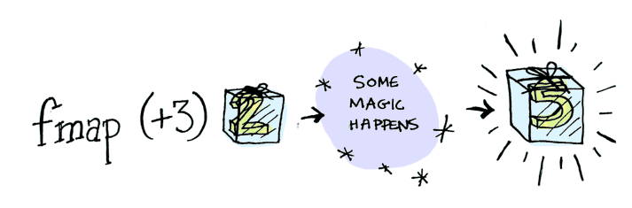

Monads
by Juha Paananen / @raimohanska
Monads are like...
How do you learn to code?

Motivation
Haskell IO
IO actions
>>=
The programmable semicolon
>>=
composes computations on optional values
Do-notation
do
tweets <- getTweets
let coolTweets = filter isCool tweets
retweet coolTweets
>>=
The Monadic Bind Function
Haskell
Your First Haskell Program
examples/haskell/Plus3.hs
Exercise I - plus3
See [github.com/raimohanska/monads](https://github.com/raimohanska/monads)
Haskell is cool


Maybe
data Maybe a = Just a | Nothing

Functor
Functor typeclass

fmap type signature

Maybe as Functor
instance Functor Maybe where
fmap _ Nothing = Nothing
fmap f (Just x) = Just (f x)
... but this is of course already included
Functors are cool
getPost :: String -> Maybe Post
getPostTitle :: String -> Maybe String
getPostTitle id = case getPost id of
Just post -> Just (titleOf post)
Nothing -> Nothing
getPostTitle id = fmap titleOf (getPost id)
Because you can apply a function to a value in a context
Mapping over a List

Let's make our own List type
Exercise II - List Functor
What if I want to apply a binary function?
Applicative
class Functor f => Applicative f where
(<*>) :: f (a -> b) -> f a -> f b
pure :: a -> f a
Applicative
Lets you apply n-ary functions to context
Functor < Applicative

Monad
class Monad m where
(>>=) :: m a -> (a -> m b) -> m b
return :: a -> m a
Your First Monad
Exercise III - Try Monad
half 4 >>= half
Monads are cool
Functor < Applicative < Monad
Monad as execution context
Haskell IO
Do-notation
retweetCool = do
tweets <- getTweets
let coolTweets = filter isCool tweets
retweet coolTweets
Desugaring
retweetCool =
getTweets >>=
(\tweets -> return (filter isCool tweets)) >>=
retweet
Hello, Juha!
Exercise IV - Age Calculator
birth year? -> you're N years old
Tips: readLn, show
Recap
Functor < Applicative < Monad
Your turn
That's it!
Juha Paananen (@raimohanska)
github.com/raimohanska/monads
Thanks to Aditya Bhargava for the pics